Chapter 10: Pathways to Work: Secondary Analysis of Early Quantitative Evidence of Programme Effectiveness
Source: Pages 204–240 of MintonThesis.pdf (September 2009). Text extracted from PDF; figures extracted directly as images.
10.1 Introduction: ‘The Graph’
Within the previous chapter, I tried to understand the political changes and bureaucratic practices that, collectively, can be referred to as ‘Pathways to Work’. I attempted to identify its main elements, focussed on each of these elements separately, and drew upon a range of sources – green papers, administrative records, information available on websites for practitioners, government-commissioned research papers and books – in order to see how each element appears to function in practice, both in isolation, and in concert with other elements. The purpose of the chapter was not to ‘prove’ anything, but to develop a more nuanced understanding of how Pathways appears to be understood and implemented by persons occupying a wide range of bureaucratic roles.
The purpose of this chapter is more constrained, more quantitative by design, and as a result the conclusions drawn at the end of it will be more unambiguous. Within this chapter, I will try to determine whether, and to what extent, Pathways to Work works in the manner intended by policy-makers: as a coherent set of measures that reduce the size of the incapacity benefit claimant population by making claimants’ transition into paid employment significantly more likely.
The underlying purpose of Pathways to Work appears to be to contribute towards two professed goals of the Department for Work and Pensions: to reach an 80% working age employment target; and to reduce the cost of social security benefits payable to the working age economically inactive (with a target reduction in IB claimant numbers of one million by 2015).1 Both of these issues will be addressed, though not to the extent of providing a conclusive answer, within the chapter.
Department for Work and Pensions Working Paper number 26, Incapacity Benefit reforms – Pathways to Work Pilots performance and analysis – begins with a one-page, six-point summary. The first point in this summary states that:
Evidence on the performance of the Pathways to Work Pilots is very encouraging. There are indications of around an eight percentage point increase in the Incapacity Benefit (IB) six month off-flow rates in the Pilot districts […]. It is not yet possible to be certain that these additional exits from benefit all relate to entries to employment. However, there is no evidence that the additional off-flows are disproportionately caused by transfers to other benefits.2
This evidence is presented graphically in Figure 3.1 of the report, reproduced as Figure 1 below.
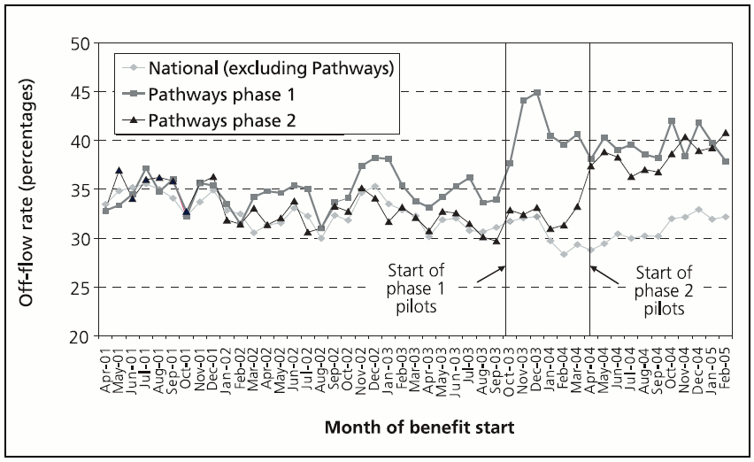
Source: Figure 3.1 of Blyth, B. (2006) ‘Incapacity Benefit Reform – Pathways to Work Pilots performance and analysis’, Leeds, Corporate Document Services
This graph was reproduced as Figure 2.3 of the DWP Green Paper A New Deal for Welfare: Empowering people to work, together with the statement that:
Early evidence from the pilots is very encouraging. We are engaging significantly greater numbers of claimants and substantially improving their prospects for work. The evaluation so far demonstrates an increase of around eight percentage points in the number leaving benefits in the first six months of their claim compared with national rates.3
Different versions of the graph have also been published in a variety of other sources. The earliest version of this graph the author has identified is from 2005, as figure 12 in the book The Scientific and Conceptual Basis of Incapacity Benefits,4 (discussed in more detail in the previous chapter), which is reproduced as Figure 2 below.
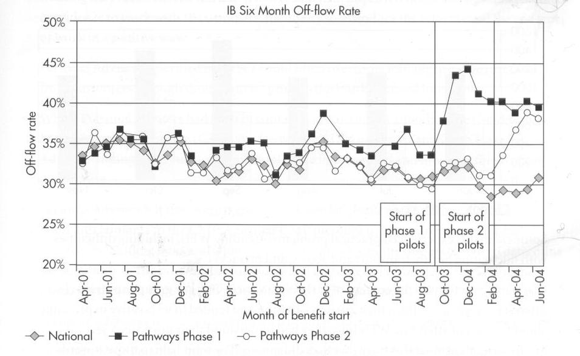
Source & title: Figure 12 of Waddell, G & M. Aylward (2005) The Scientific and Conceptual Basis of Incapacity Benefits, London, TSO
The latest version of the graph I have identified is from December 2006, as shown in Figure 3:
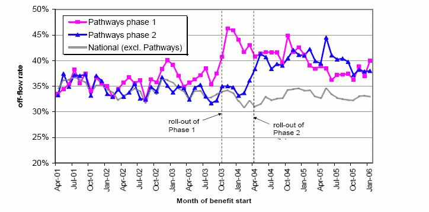
Source and title: Chart 3 of Blyth, B (2006) ‘Pathways to Work Performance Summary, December 2006’
A version of the graph has been reproduced for the Organisation for Economic Cooperation and Development (OECD) Economic Survey of United Kingdom, 2005, as shown in Figure 4 and Figure 5:
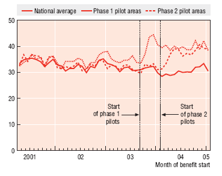
Source and title: Figure 3 of OECD (2005) ‘Economic Survey of the United Kingdom, 2005’
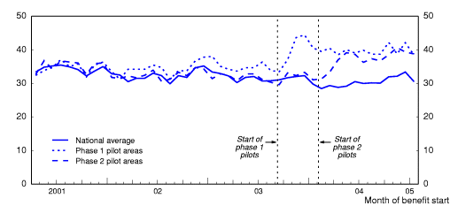
Source and title: www.oecd.org (2006), “Pathways to Work”
Given the prominence of versions of this graph – which I will refer throughout this section as a proper noun: ‘The Graph’ – in 2005 and 2006, in a number of key publications meant for consumption by the general public and international economic interest groups, and each time used to indicate the effectiveness of Pathways to Work in helping the government towards its economic goals, it would probably not be an exaggeration or distortion to describe The Graph as ‘iconic’ in its political function and application; in the sense that, when the government wished, during this time period, to demonstrate the success of the programme, this is the graph used as corroborating evidence. In this sense, The Graph was employed as a visual rhetorical tool to advance a particular political course of action.
In order to understand how and why The Graph has been used in this fashion, it will be helpful to address both what it rhetorically infers, by formalising one’s intuitive understanding of ‘treatment effect’, and seeing how the graph fits with this intuitive understanding; and also what The Graph logically implies, by reading the graph and related materials more carefully, and employing some simple (but unintuitive) mathematical operations in compound probability.
10.2 Inference
The next few subsections of this chapter will summarise a number of ideas and issues related to the concept and inference of ‘treatment effects’. These will then be applied in the next section of this chapter to better understand and interpret The Graph.
10.2.1 The Concept of The Treatment Effect
In most tests of economic theory, and certainly for evaluating public policy, the economist’s goal is to infer that one variable (such as education) has a causal effect on another variable (such as worker productivity). […] The notion of ceteris paribus – which means “other (relevant) factors being equal” – plays an important role in causal analysis. […] Holding other factors fixed is critical for policy analysis[.] […] In most serious applications, the number of factors that can affect the variable of interest […] is immense, and the isolation of any particular variable may seem like a hopeless effort. […] However, […] when applied carefully, econometric methods can simulate a ceteris paribus experiment.5
Poincare was the first known big-gun mathematician to understand and explain that there are fundamental limits to our equations. He introduced nonlinearities, small effects that can lead to severe consequences[.] […] Poincare’s entire point is about the limits that nonlinearities put on forecasting; they are not an invitation to use mathematical techniques to make extended forecasts. Mathematics can show us its own limits rather clearly. […] Poincare showed [that the degradation of forecasts compound abruptly] in a very simple case, famously known as the “three body problem.” If you have only two planets in a solar-style system, with nothing else affecting their course, then you may be able to indefinitely predict [their behaviour]. But add a third body […] ever so small […]. Initially the third body will cause no drift, no impact; later, with time, its effects on the two other bodies may become explosive. […] Our world, unfortunately, is far more complicated than the three body problem; it contains far more than three objects.6
Epistemologically, and given the complexity of the social world, the very idea that we can reasonably estimate the effect of one variable on another may be foolish. The problem lies with the definite article: as with the ‘third body’, ‘the’ effect of A on B may be small initially, then become ‘explosive’ later. Or the converse may occur: ‘the’ effect may start large, then atrophy, becoming (apparently) negligible months or years later; ‘the’ effect of A on B may be large in the presence of C, but not otherwise. The apparently innocent assumption underlying the use of the definite article could be fundamentally mistaken when one introduces A into a complex, dynamic, nonlinear social system that contains not only B, but countless other objects whose relationships with A, with B, with the relationship between A and B, and with one another, can only be assumed.
However, the notion of ‘treatment effect’ is intuitive to us, and appears frequently confirmed by everyday experiences: flick a switch, and the room changes from gloomy to bright; drink some water, and go from feeling thirsty to satiated. More formally, and more generally:
TEi = Yi(Tr=1) - Yi(Tr=0)
Where TEi refers to the Treatment Effect of treatment Tr (a binary variable), with respect to outcome variable Y of object i.
In practice, TEi can never be known directly, because for any object i, only either Yi(Tr=1) or Yi(Tr=0) is observed. Colloquially: we did something to him, and one thing happened; and we didn’t do that thing to her, and another thing happened; but we don’t know what would have happened if we didn’t do that thing to him, and did do that thing to her. Technically: half of the data required to know ‘the treatment effect’ (if it exists) is always missing.
10.2.2 Controlling for Variables
‘Controlling for’ variables in a linear regression analysis is a common approach used to try to work around this problem. The statistician has a dataset containing k + 2 pieces of quantitative information about n objects; she begins analysing the dataset with the assumption that there exists a linear relationship between variable Y and Tr, the ‘treatment’, that exists ‘on average’. She thus partitions the dataset into two column vectors, Y and Tr, each of length n, and an n by k + 1 matrix X containing the other variables, preceded by a column of 1s. Then she states that:
Y = alpha . Tr + X . beta + epsilon
Where alpha is a scalar value, and beta a row vector of length k + 1.
Then she uses a mathematical rule to populate alpha and beta with values that minimise the square of the distance between Y and (alpha . Tr + X . beta), as well as producing measures – variance estimates – that identify the degree of precision with which these coefficients have been identified.
Then, she divides the coefficient alpha by the square root of its variance, and compares this value to a list of numbers, known as ‘critical values’. If the ratio is above the critical value, she declares it ‘statistically significant’; if it is below, she declares it ‘statistically insignificant’.
If the coefficient is ‘statistically significant’, then she will proceed to state something like, “controlling for [lists some of the pieces of information held in X], the effect of [variable Tr] on [variable Y] is to increase [/decrease] Y by between [alpha - 1.96 times its standard deviation] and [alpha + 1.96 its standard deviation] [whatever the unit of Y is].”
This statement, which follows from, and is produced by, a sequence of largely mechanical and algorithmic procedures, is the endpoint of a lot of quantitative social science (and medical) research.
The level of technical sophistication (or, depending upon perspective, algebraic alchemy) involved in the above should not distract us from two key points: First, that the procedure develops from a common intuition that ‘the treatment effect’ exists and should be identified; and secondly, that in operationalising the intuition, a variety of assumptions have to be made about the social world that may not be valid.
10.2.3 Comparisons
Although ‘controlling for’ variables is a relatively simple and standard approach used to operationalise the intuition of ‘the treatment effect’ within statistical investigations, the way most people try, informally and implicitly, to estimate ‘treatment effects’ is by comparison. For example:
Bill is like Ben. They both went to the same school, listened to the same music, got the same grades… then Bill met Elle. Now Ben’s got a degree and a good job, and Bill’s got no qualifications and a drug habit… it’s all Elle’s fault.
Here the counterfactual is being imputed by matching one observed treated object (‘Bill’) with another observed untreated object (‘Ben’) that is assumed to differ substantially only to the extent that the former has been treated (to ‘Elle’) and the latter has not. The difference in outcomes between the two objects is thus assumed to result from the treatment, so producing a treatment effect estimate.
Some of the more sophisticated statistical methods employ the principle of comparisons too, by using a variety of matching procedures to try to pair each treated datum with a ‘similar’ untreated datum, then trying to find the average difference between pairs with respect to the outcome variable. Methods such as propensity score matching, and computationally intensive hill-climbing and genetic algorithms, are used in order to do this.
10.2.4 Changes over Time
Inductive reasoning suggests that past performance can be indicative of future performance, and so one of the objects with which an object may usefully be compared is its past self. If something happens (Tr=1) to an object at time T, and soon afterwards there is a sudden change in the recorded level of a given quality associated with the object, then perhaps that change resulted from the treatment.
Of course, as the counterfactual (Tr = 0 at time T) was unobserved, one cannot know if this would have happened regardless. Mis-attributing a change in an observed outcome (Y) to a given event (Tr) because the change occurred soon after the event is the fairly well known logical fallacy of post hoc ergo propter hoc. (“After this, therefore because of this”) However, it is only a fallacy if it, the given event, has been mis-attributed as cause. Given that the counterfactual is unobserved, it is in practice often difficult to be confident about whether a particular causal attribution is fallacious, or a legitimate inference based upon the data available.
10.2.5 Combination
The two approaches described above – comparing treated objects with ‘similar’ untreated objects, and comparing a given object post-treatment with the same object pre-treatment – are often combined, in order to try to differentiate the effects of time (which both ‘treatment’ and ‘control’ groups of objects incur) from the effects of treatment (which only the ‘treatment’ group incurs).
Within both of the quantitative evaluations of Pathways to Work,7 this combined approach has been operationalised and formalised using linear regression, producing what is known in various pieces of econometrics literature as the ‘Differences-in-Differences’ (DiD) method of evaluation. We will consider this more formalised combination of various intuitions about causal inference in the next chapter; however, this concept is introduced at this stage because it is, effectively, the approach used informally by those using The Graph to make judgements about ‘the treatment effect’ of Pathways to Work on Incapacity Benefit claimants.
10.3 Inferring Treatment Effects from The Graph
The Graph indicates to the viewer a treatment effect because it compares two groups – collections of jobcentre plus districts – that have been ‘treated’ with Pathways to Work with:
- Themselves, before treatment;
- Each other, before and after treatment;
- Control regions (everywhere else), before and after treatment.
In this sense, it informally and visually presents a Difference-in-Differences argument for the existence of the treatment effect.
The treatment effect – the increase of around eight percentage points – is estimated by simply comparing the difference between both regions after becoming Pathways to Work regions, with the control regions.
The issue of the unobserved counterfactual is ultimately intractable, and applies to all treatment effect evaluations. With the five graphs presented, that together constitute The Graph, there are also one or two additional, more specific, difficulties with attributing a treatment effect to Pathways to Work. We can see this by describing each of the five graphs in more detail, in order to identify both similarities and differences between them.
With Figure 1, from the 2006 DWP working paper, the scale of the vertical axis is from 20% to 50%. The horizontal axis is from April 2001 to February 2005. Phase one treatments are identified as beginning at the end of September/start of October 2003; and phase two treatments are identified as beginning at the end of March/start of April 2004. For phase one regions, the off-flow rate appears somewhat higher than those of the other two, by around two to four points for each month from around December 2002 onwards: i.e. there already appears to be a small, but consistent difference between these regions and all others, almost a year before the start of the pilot programme. After phase one treatment, there is a noticeable rise from around 34 points in the previous month, to a peak of 45 points two months after the start of the pilot; this then declines to around 38–40 points from around January 2004 onwards. For phase two regions, there is a similar longer-term rise, to around 37–40 points from May 2004 onwards. However, most of this rise, compared to control regions, occurs in the three months before the start of treatment, in the period February–April 2004.
With Figure 2, produced earlier in a less publically available source, the phase two start date implied differs from that implied in Figure 1, and official statements, that phase two began in April 2004. The effect of (apparently) shifting the start date of the phase two pilots forwards by two months is to give the impression that most of the rise in off-flow levels occurred immediately after the treatment, even though, with the correct start date, this rise is shown to occur immediately before the treatment.
Figure 3, an update of Figure 2, also uses a vertical range of 20% to 50%, also begins from April 2001, and continues until January 2006. Interestingly, there has been a subtle but significant rise in the values plotted for both control and treatment regions, and perhaps of greater magnitude for the former than for the latter.
Figure 4 and Figure 5, the two versions of The Graph submitted to the OECD, have a vertical axis ranging from 0% to 50%, which is perhaps less misleading than the 20% to 50% range used in the previous graphs. As with Figure 2, the initiation of phase two treatment appears to have been shifted forwards by two months, in order to suggest that most of the rise in off-flow rates for these regions occurred immediately after, rather than immediately before, the treatment.
Pedantic though some of these observations may appear, they are important when assessing the validity of the claim – made implicitly and visually using The Graph itself, and explicitly and verbally within some accompanying commentaries – that Pathways to Work has a substantial and unequivocal effect of the type intended.
10.3.1 Axis Scales
The choice of axis scale has, potentially, a great influence on the likely interpretation of graphically represented data, as shown in Figure 6. The apparent magnitude of an effect can either be made to appear much inflated, or much reduced, depending upon the scale of reference used; the use of a vertical scale ranging from 20% to 50%, rather than, say, 0% to 50% or 0% to 80%, thus makes the effect size appear larger than it would appear with a larger range.
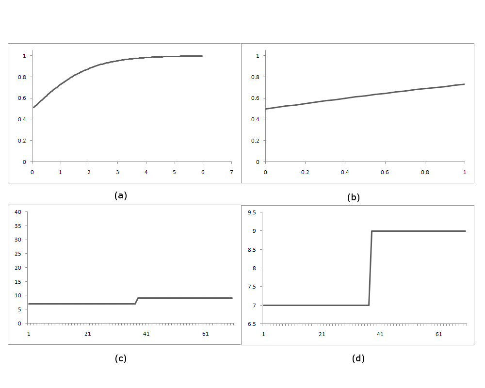
Sub-figures (a) and (b) differ only with respect to the vertical axis used. Sub-figures (c) and (d) differ only with respect to the horizontal axis used.
10.3.2 The Rising Trend in Control Regions
The later graphs appear to show the control regions rising faster than the treatment regions. This can probably be explained by the expansion of the Pathways to Work programme to non-pilot areas from October 2005 onwards. This is similar to the reason given for discontinuing updates of The Graph, as stated in the November 2006 update of the performance summary:
The internal comparative analysis of off-flow rates between Pathways and non-Pathways areas was designed to provide an initial indication of the effects of the programme, prior to the formal evaluation evidence becoming available. Whilst it provides a clear snapshot of the impact from the early months of the pilot, the comparison with non-Pathways areas becomes less relevant over time as the number of non-Pathways areas reduces and other initiatives are introduced. We therefore do not intend to update this analysis in future versions of this publication. The Pathways evaluation will assess the longer term impact of Pathways. This is due for publication in 2007.8
The report referred to at the end of the paragraph is that produced by Helen Bewley and colleagues at the Policy Studies Institute,9 which will be the main focus of the next chapter.
10.3.3 Shifting Start Dates and Anticipatory Treatment Effects
A more substantial concern with some of the graphs (Figure 2, Figure 4 and Figure 5) is the apparent shifting of the start date of the second phase to February 2004, in order to make ‘apparent cause’ and ‘apparent effect’ appear to be in the correct temporal order, even though the start date for phase two pilots was unambiguously and consistently stated elsewhere as beginning in April 2004. Whether by accident or otherwise, the version of the graph submitted as evidence of the success of the programme to the ‘international economic community’ appears, through this adjustment to the time-line, to disguise an issue with inferring a consistent treatment effect for both groups of pilot regions that is apparent in other graphs meant for less ‘prestigious’ audiences.
The existence of Effect-before-Cause does not, necessarily, completely invalidate the argument that Cause is causing Effect. When discussing the phase two pilots ‘temporal ordering issue’ with Duncan McVicar, a labour economist with a strong interest in incapacity benefit patterns, I was directed to a 2003 paper by Dan A. Black and colleagues,10 which appears to identify an ‘anticipatory treatment effect’ within a similar US labour market intervention conducted in the state of Kentucky in the mid 1990s. The paper concludes that the letter, warning claimants of the intervention, appeared to have a greater ‘treatment effect’ (on the probability of leaving UI) than the intervention itself.
Analogously, with respect to Pathways to Work, one could imagine that employees of Jobcentre Plus offices, when informed that they have been selected as an area where an important new government policy will be trialled, may take action to try to improve the IB off-flow rate before the official start of the scheme. This explanation has not, however, been offered within government documents regarding the impact of Pathways, and for this reason the existence of Effect-before-Cause remains a prominent, unexplained anomaly when considering The Graph as evidence for the Treatment Effect.
10.4 Off-flow Rates and Number Needed to Treat
I will now attempt to infer the likely substantive meaning of the treatment effect claimed above. I will do this by trying to convert between the metric displayed above, off-flow rates, and the epidemiological measure of effectiveness, Number Needed to Treat (NNT),11 which I will define as follows:
NNT = 1 / |P(Y=1|Tr=1) - P(Y=1|Tr=0)|
Technically: the reciprocal of the modulus of the difference in outcome probabilities between treated and non-treated groups. More colloquially, to use a description within the British Medical Journal: “In a trial comparing a new treatment with a standard one, the number needed to treat is the estimated number of patients who need to be treated with the new treatment rather than the standard treatment for one additional patient to benefit.”12
Converting between probabilities and NNT does not mitigate any of the epistemological issues associated with calculating and assuming treatment effects. However, it does provide a much more intuitive and meaningful description of the substantive implications that follow if one assumes the treatment effects calculated are true.
Table 1 presents a range of estimates, based upon Figure 1, Figure 2 and Figure 3, for the level of off-flow for control regions, and for the two treatment regions, after treatment.
| Figure | Control Min | Control Mid | Control Max | Treatment 1 Min | Treatment 1 Mid | Treatment 1 Max | Treatment 2 Min | Treatment 2 Mid | Treatment 2 Max |
|---|---|---|---|---|---|---|---|---|---|
| 10.1 | 28% | 31% | 33% | 38% | 40% | 45% | 37% | 39% | 40% |
| 10.2 | 28% | 29% | 31% | 39% | 40% | 45% | 39% | 39% | 39% |
| 10.3 | 32% | 33% | 34% | 37% | 40% | 46% | 37% | 39% | 44% |
Table 2 presents, to the nearest integer,13 the NNT estimates produced based upon these three graphs.
| Figure | Min T1 | Min T2 | Min T | Mid T1 | Mid T2 | Mid T | Max T1 | Max T2 | Max T |
|---|---|---|---|---|---|---|---|---|---|
| 10.1 | 7 | 11 | 9 | 11 | 13 | 12 | 20 | 25 | 23 |
| 10.2 | 6 | 10 | 8 | 9 | 10 | 10 | 13 | 13 | 13 |
| 10.3 | 8 | 9 | 8 | 14 | 17 | 15 | 33 | 33 | 33 |
| Overall | Low: 9 | Middle: 12 | High: 23 |
T1: phase 1 pilot; T2: phase 2 pilot; T: average of phase 1 and phase 2.
The overall NNT estimates range from around 9 persons to 23 persons, with a central estimate of 12. This suggests that, for every 12 new claimants ‘treated’ by Pathways to Work, one more claimant will make the transition off incapacity benefit within six months than in comparable, non-Pathways areas.
10.4.1 Proxy Measures and Intended Outcomes
However, the outcome measured is not, quite, the outcome desired by the DWP. All versions of The Graph plot “Pathways six month off-flow rate by month of benefit start and pilots phase.”14 This measure is a proxy for the outcome of interest: the proportion of claimants who make the transition onto employment.
Unfortunately, this outcome is not known, because The Graph is based on administrative, incapacity benefits data,15 and so does not track the status of all claimants when they leave the system. As the working paper states:
[The Graph] is not yet conclusive evidence of an overall impact on off-flows or employment – for example, the gap may reduce in later months (i.e. nine- and twelve-month off-flows) and this will be assessed in future. However, the Destinations of Benefit Leavers 2004 survey shows that 56 per cent of IB leavers in Pathways districts enter employment of 16 hours or more. This is consistent with the national IB figure.16
The report for the survey, the Destination of Benefit Leavers 2004 survey, contains the proportion stated above, 56 per cent; this comprises 54% for phase one regions, and 57% for phase two regions.17 (N=2127) It also states that the proportion of IB leavers entering employment nationally was 52 per cent.18 (N=6295)
The result of including this additional stage is indicated in Table 3. This changes the ‘low’ estimate from 9 to 13; the ‘middle’ estimate from 12 to 18; and the ‘high’ estimate from 23 to 27.
| Figure | Min T1 | Min T2 | Min T | Mid T1 | Mid T2 | Mid T | Max T1 | Max T2 | Max T |
|---|---|---|---|---|---|---|---|---|---|
| 10.1 | 12 | 15 | 14 | 18 | 16 | 17 | 30 | 25 | 28 |
| 10.2 | 11 | 14 | 12 | 15 | 14 | 15 | 20 | 16 | 18 |
| 10.3 | 13 | 13 | 13 | 23 | 20 | 21 | 43 | 29 | 36 |
| Overall | Low: 13 | Middle: 18 | High: 27 |
| Figure | Min T1 | Min T2 | Min T | Mid T1 | Mid T2 | Mid T | Max T1 | Max T2 | Max T |
|---|---|---|---|---|---|---|---|---|---|
| 10.1 | 14 | 21 | 18 | 21 | 24 | 23 | 38 | 48 | 43 |
| 10.2 | 12 | 19 | 16 | 17 | 19 | 18 | 24 | 24 | 24 |
| 10.3 | 15 | 17 | 16 | 27 | 32 | 30 | 64 | 64 | 64 |
| Overall | Low: 16 | Middle: 24 | High: 44 |
The results indicate a significant degree of uncertainty as regards what the substantive effect of the programme actually is, even within the relatively short term. They also indicate that, irrespective of whether one adopts a ‘best case’ or ‘worst case’ scenario, it seems that one would have to engage in the fairly labour intensive (and thus costly) process of ‘treating’ a lot of people in order to get one additional person in employment.
10.5 Cost Per Successful Intervention: an illustrative approximation
In order to produce an estimate of the cost per successful intervention one needs to produce plausible estimates for a lot of other quantities. In this illustration, I will make the following assumptions:
- The IBPA earns £20,000 per annum.19
- For this she works 47 weeks of the year.
- And works for 5 days a week, 8 hours a day (a 40 hour week).
- And has, on average, one Work-focussed Interview per hour.20
- The average claimant attends two WFIs.21
- The IBPA has to interview 18 claimants (the NNT) in order to get one extra person in employment.
Then it takes, on average, 36 hours worth of interviews in order to get one extra job outcome. I.e. it takes almost a full working week to get one extra person in employment. The cost of the IBPA’s labour alone would thus be around £400 per successful transition.
At the short-term rate at which IB is paid (£63.75 per week), this would be equivalent to around 6 weeks’ benefit; at the higher long-term basic rate (£84.50 per week), this is closer to four and a half weeks’ benefit payment. Assuming that a £40 Return to Work Credit (RTWC) is paid, then it would take almost 17 weeks to recoup the costs of a successful intervention at the lower rate, and around 9 weeks at the higher rate.
Even with the unrealistically optimistic assumption that all other administrative costs are negligible, it becomes apparent that one cannot be sure that the net financial benefits of the programme will outweigh the costs.
10.6 Aggregate Effects
More than half of the 2.4 million people claiming incapacity benefit have been off work for more than five years, new figures have revealed. The damning statistics contradict Government assurances that the problem of widespread incapacity claims is being tackled by getting the long-term sick back to work. […] Chris Grayling, the shadow work and pensions secretary, who uncovered the figures, said they were a damning indictment of Labour’s record on welfare reform. […] Caroline Flint, the welfare reform minister, said: “The number of people on incapacity benefits is falling after two decades of substantial growth and is the lowest it has been for seven and a half years.”22
In the previous part of this chapter, I have shown how the Department for Work and Pensions has selectively employed administrative statistics in order to suggest that Pathways to Work is, in general, an effective and successful policy. In the above extract, administrative statistics have been selectively employed in order to suggest the converse. These two opposing positions can both be supported by the same body of statistics because different outcomes are being assessed.
Figure 7 presents the total number of persons, within the United Kingdom, claiming one of the three types of IB, or IB Credits, or Severe Disablement Allowance (SDA).23
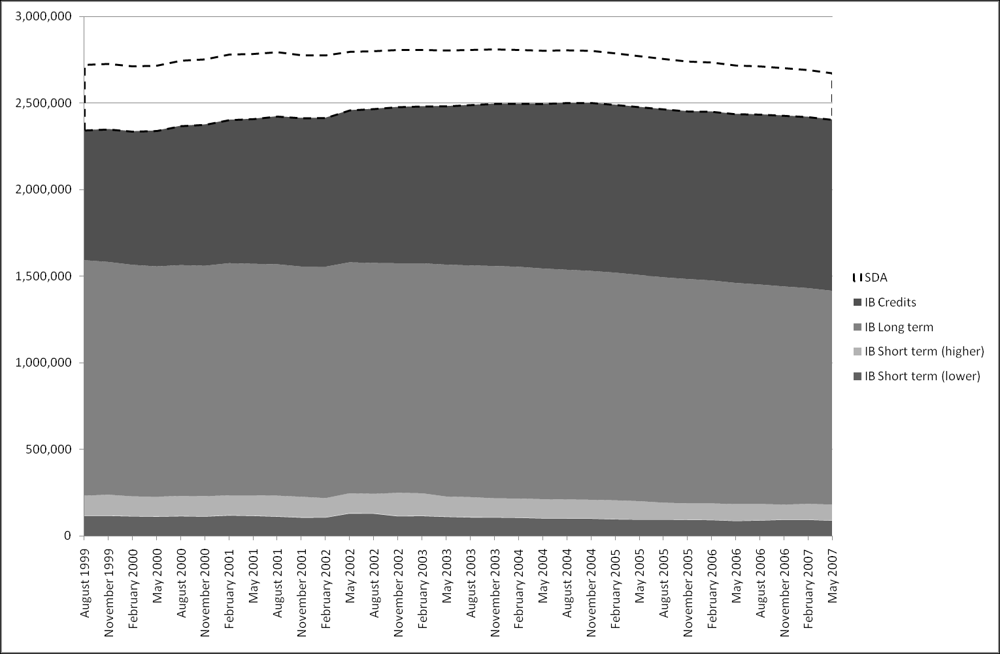
Source: www.nomisweb.co.uk, retrieved 6 May 2008
IB Credits claimants have grown steadily since late 1999, from around three quarters of a million in August 1999, to almost one million in May 2007. During this period, the contributory IB Long term claimant numbers reduced by around 126,000. Thus the former rates have risen around twice as fast as the latter rates have fallen.
Figure 8 plots the total number of IB claimants by duration of claim, in Great Britain, from August 1999 to May 2007.
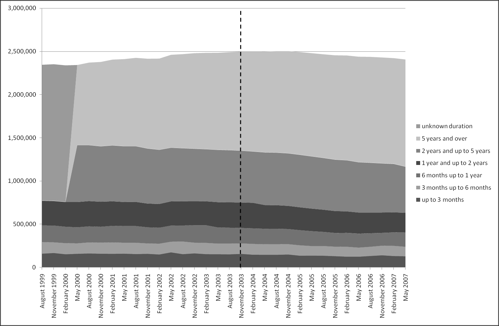
Source: www.nomisweb.co.uk, retrieved 6 May 2008
The proportion of all IB claimants who have been on IB for five years or over appears to be increasing. This is confirmed in Figure 9.
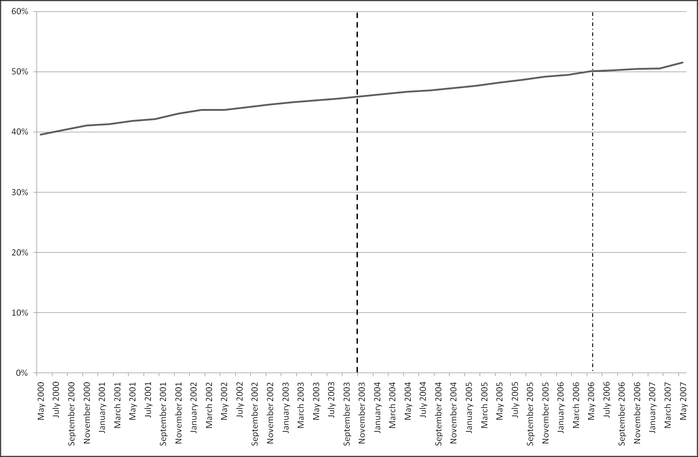
Source: www.nomisweb.co.uk, retrieved 6 May 2008
With respect to these aggregate statistics, Pathways to Work appears to have done nothing either to increase nor to decrease this trend.
Figure 10 shows trends in IB numbers by duration of claim, indexed to their level in November 2003 (the time Pathways to Work was first piloted).
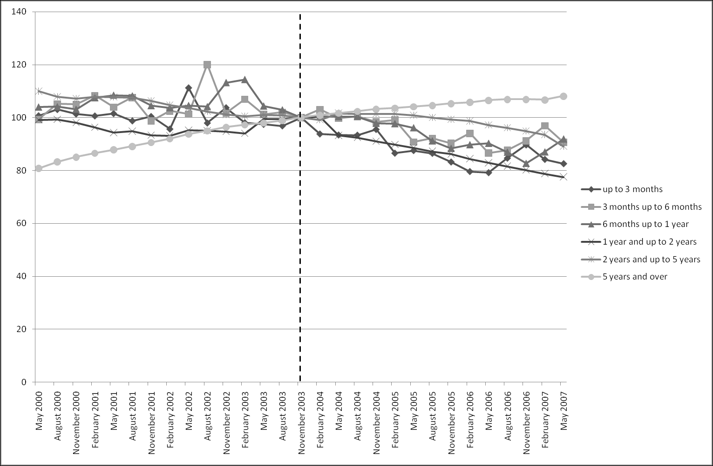
Source: www.nomisweb.co.uk, retrieved 6 May 2008
Figure 11 shows claimant numbers (indexed to November 2003 levels) by benefit type, rather than benefit duration.
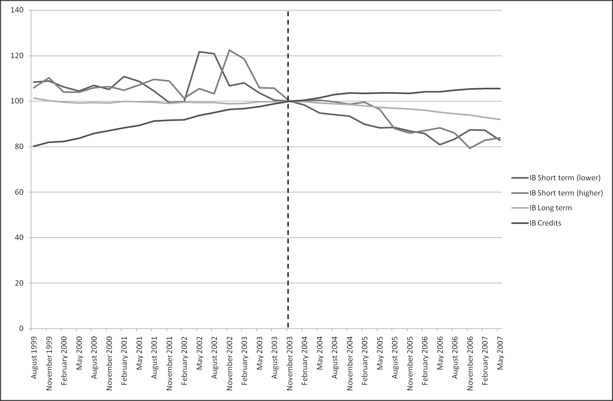
Source: www.nomisweb.co.uk, retrieved 6 May 2008
The above graphs show that, although there are some indications that aggregate trends in some forms of IB may be different in the years after Pathways was first introduced, as compared to the years before, it is not possible to know whether such differences can be attributable to the programme. The size of any effect that may be the result of Pathways appears slight.
10.6.1 Heavily Diluted Aggregate: Mixing ‘Treated Flow’ with ‘Untreated Stock’
The previous part of this chapter showed that, as regards aggregate claimant numbers, the introduction of Pathways to Work appears to have had no conclusive, immediately apparent, or substantial impact on more general, longer term trends. Although not immediately obvious from The Graph, this lack of substantial aggregate treatment effect follows as a logical implication of the data and claims already published.
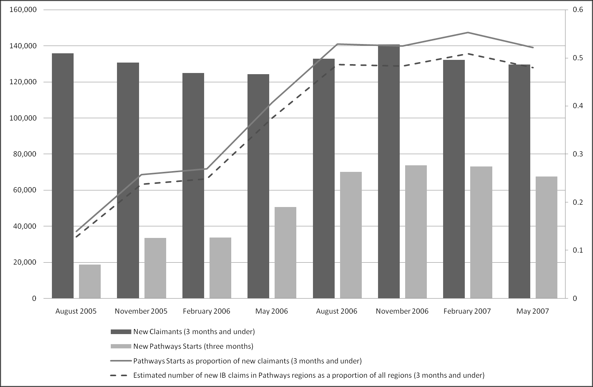
Sources: www.nomisweb.co.uk; Pathways to Work Performance Summaries
10.7 Introducing the Number Needed to Observe (NNO)
The figures described above allow us to produce a new metric, based upon the concept of Number Needed to Treat (NNT), that indicates the extent to which the treatment effect suggested within The Graph have led, and will lead, to noticeable changes in the overall IB claimant levels. I will refer to this metric as ‘Number Needed to Observe’ (NNO), as it indicates the number of randomly selected claimants one would have to observe, on average, in order to see one additional person leave IB as a result of Pathways to Work.
NNO = NNT / f
Where f is simply the ‘treatment eligible’ proportion of the treatment region. In the hypothetical example where NNT is 5 and f is 1/10, the NNO would be 50.
10.7.1 Estimating the Number Needed to Observe (NNO)
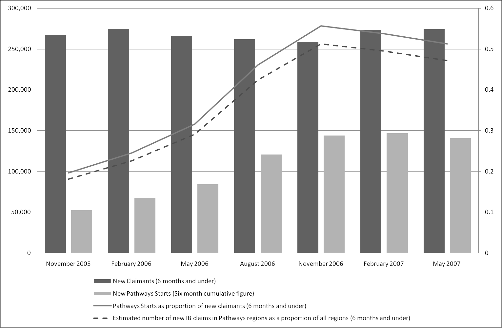
Sources: www.nomisweb.co.uk; Pathways to Work Performance Summaries
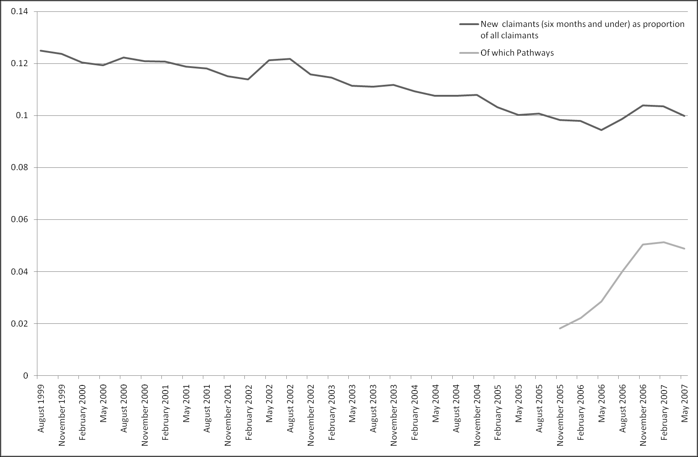
Sources: www.nomisweb.co.uk; Pathways to Work Performance Summaries
The average value of the three most recent quarters are 5.0% for f1 (proportion currently treated), and 10.2% for f2 (proportion eligible nationally).
The NNO estimates from Table 2 (NNTs of 9, 12, 23): f1 measure gives NNOs of 170, 244, 453; f2 measure gives 83, 120, 222.
From Table 3 (NNTs of 13, 18, 27): f1 gives NNOs of 258, 352, 546; f2 gives 126, 173, 268.
From Table 4 (NNTs of 16, 24, 44): f1 gives NNOs of 327, 470, 872; f2 gives 160, 230, 428.
Based on the May 2007 IB population of around 2.4 million, if Pathways extends to cover the entire country without changing in effectiveness, then the programme is estimated to reduce the IB population by between around 10,800 and 29,000 claimants per six months. In terms of the government’s professed goal of reducing the IB claimant population by one million, this suggests a national roll-out of Pathways would bring the government between 1.1% and 2.9% closer to their target per six months. If the effect were linear and cumulative, then the Pathways programme would cause numbers to reduce by one million by between 2021 and 2050, and so the 2015 target would be missed.
10.8 Subsection Concluding Remarks
Within the two previous sections, in order to try to assess the validity of a newspaper report which suggested that government IB reforms have been ineffective, I have considered trends in aggregate IB statistics over the period August 1999 – May 2007.
Very long duration claimants have represented an increasing proportion of claimants. A large, and increasing, proportion of IB claimants have been on the benefit for so long that they have exhausted the fund of National Insurance contributions they accrued previously. For these claimants, the ‘supply side problem’ assumption implicit within the thrust of welfare reform programmes like Pathways to Work – that the levels of benefit received by claimants are too generous, and thus encourage more indolent, non-work-seeking behaviour – appears untenable.
The disjuncture between small-scale effectiveness (changes in new claimant off-flow rates indicated within The Graph) and large-scale observability (changes in aggregate claimant numbers) is a key reason why, depending upon political orientation and organisational position, statistical evidence can be utilised both to give the impression that ‘Pathways is a success’, and to give the impression that ‘Pathways is a failure’.
10.8.1 Concluding Observations Regarding The Graph: 6 Month versus 12 Month Off-Flow Rates
This chapter has been primarily concerned with the way a particular metric (Incapacity Benefit six-month off flow rates) has been used to promote, and indicate the success of, Pathways to Work. I have seen how the likely substantive implications of the claims implied by this frequently and prominently repeated metric are less impressive than The Graph initially appears to suggest. In short, I have seen a graphical metric utilised by a government organisation as a rhetorical device.
Why has this particular metric been used in this way? The inadvertent release of a 12 month (rather than six month) off-flow rate version of the graph, shown in Figure 15, suggests that the six month metric was not simply an adequate proxy for longer-term outcomes.
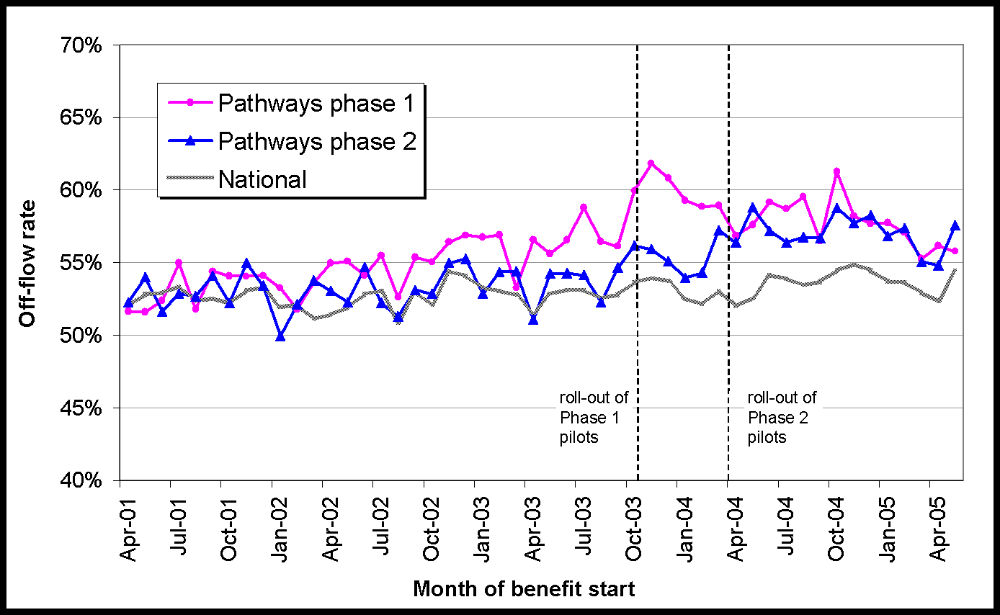
Source: Slide 21 of DWP (2007), ‘Pathways to Work: Invitation to Tender Provider Event’
Unlike the 6 month off-flow rate graph (‘The Graph’), the 12 month off-flow rate version shown in Figure 15 does not infer a substantive treatment effect, in that there appears to be no substantial difference between Treatment and Control regions at the end of the period of observations. Whereas the six-month variant infers that the programme has been successful in its aims, the 12 month version suggests that much of the apparent initial effectiveness of the treatment is lost in later months, and thus raises doubts about the programme effectiveness as a long-term solution to a long-term problem.
The next chapter will consider more recent evidence, produced by the Policy Studies Institute in 2007,24 that has an interpretation consonant with that given above.
Footnotes
“Our aim is to reduce by a million the number of people receiving incapacity benefit by 2015”, Mr. Timms, source: www.parliament.uk (2008). “House of Commons Hansard Debates for 31 March 2008 (pt 0003).” Retrieved 21 May, 2008.↩︎
Blyth, B. (2006). Incapacity Benefit reforms – Pathways to Work Pilots performance and analysis. DWP. Leeds, Corporate Document Services., p. 1↩︎
DWP (2006). A New Deal for Welfare: Empowering people to work. DWP, The Stationery Office., p. 28↩︎
Aylward, M. and G. Waddell (2005). The Scientific and Conceptual Basis of Incapacity Benefit. London, The Stationary Office.↩︎
Wooldridge, J. M. (2006). Introductory Econometrics: A Modern Approach. Mason, OH, Thompson South-Western., pp. 13–4, emphasis in original↩︎
Taleb, N. N. (2007). The Black Swan: The Impact of the Highly Improbable. London, Penguin., pp. 176↩︎
Adam, S., C. Emmerson, C. Frayne and A. Goodman (2006). Early quantitative evidence on the impact of the Pathways to Work pilots. DWP, Corporate Document Services. And: Bewley, H., R. Dorsett and G. Haile (2007). The Impact of Pathways to Work. DWP. London, Corporate Document Services.↩︎
Blyth, B. (2006). Pathways to Work Performance Summary, December 2006. DWP., emphasis in original↩︎
Bewley, H., R. Dorsett and G. Haile (2007). The Impact of Pathways to Work. DWP. London, Corporate Document Services.↩︎
Black, D., J. Smith, M. Berger and B. Noel (2003). “Is the Threat of Reemployment Services More Effective than the Services Themselves? Experimental Evidence from the UI System.” American Economic Review 93(4): 1313–1327.↩︎
See Cook, R. J. and D. L. Sackett (1995). “The number needed to treat: a clinically useful measure of treatment effect.” British Medical Journal 310: 452–454.↩︎
Altman, D. G. (1998). “Confidence intervals for the number needed to treat.” British Medical Journal 317: 1309–12.↩︎
The use of integers follows from the intuitive, common sense meaning of the NNT estimate. See Gigerenzer, G. (2003). Reckoning with Risk: Learning to Live with Uncertainty. London, Penguin.↩︎
Blyth, B. (2006). Incapacity Benefit reforms – Pathways to Work Pilots performance and analysis. DWP. Leeds, Corporate Document Services., p. 9↩︎
According to ibid. (p. 9), the National Benefits Database↩︎
Ibid. p. 10↩︎
Coleman, N. and L. Kennedy (2005). Destination of benefit leavers 2004. DWP. Leeds, Corporate Document Services., p. 39↩︎
Ibid., p. 21↩︎
After this initial estimate was produced, the author identified a passage in a Select Committee report indicating that the average trainer receives, on average, just £12,000 per annum, but that this level may be too low to attract suitable applicants.↩︎
A 2006 National Audit Office (NAO) report states that “the average interview length with a Personal Advisor is 41 minutes”.↩︎
This estimate is based upon data on numbers of initial and repeat WFIs in the Pathways to Work performance summary reports, for the period June 2005 to May 2007. The resulting estimate was 2.12.↩︎
www.telegraph.co.uk (2007). “Incapacity benefit claims still on the rise.”↩︎
No one has been eligible to claim SDA since April 2001.↩︎
Bewley, H., R. Dorsett and G. Haile (2007). The Impact of Pathways to Work. DWP. London, Corporate Document Services.↩︎